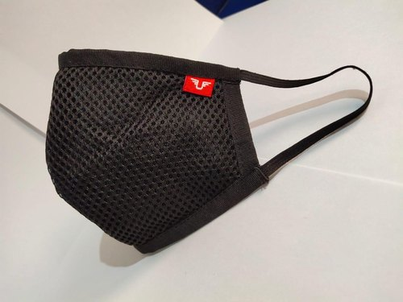

Masks are one of the most important tools to fight against COVID-19, as it protects others and you. To make your mask effective, make sure that it covers your nose to chin and fits comfortably around the sides without any gaps. You need to wear a mask if: you are above two years old, you're in any form of transportation or transportation hub or when there are guests.There are three most common masks to wear: cloth masks, surgical masks and N95 masks.
A cloth mask should have at least 2-3 layers of tightly wooven, breathable fabric (such as cottonn). The fabric should also block light when held up to a bright light source. Make sure that you do not wear and cloth masks which have exhalation opening (like valves or vents). have a single-layer fabric or fabric which can't block light.

Disposable masks are also known as surgical or medical procedure masks. An effective disposable mask should have multiple layers of non-wooven material and a nose wire. Prevent using disposable masks which are made of wet or dirty material.
A N95 mask can filter upto 95% of particles in the air if it has a duck-bill, cup or flat fold shape, has two straps that go around the head, has a formable nose wire, and has appropriate marking which says that it is approved by NIOSH (National Institute for Occupational Safety and Health). Don't wear a N95 mask if you are wearing it with another mask or respirator, if it is wet or dirty, if it is a fake one or if it is hard to breathe from.
1. Take your two cotton cloths and put them on top of each other.
2. Fold them in half
3. Add hair ties on both of the sides and fold the extra cloth
4. Flip it
5. Stretch the hair ties. You are now done with making your mask.
Types of Masks and Respirators